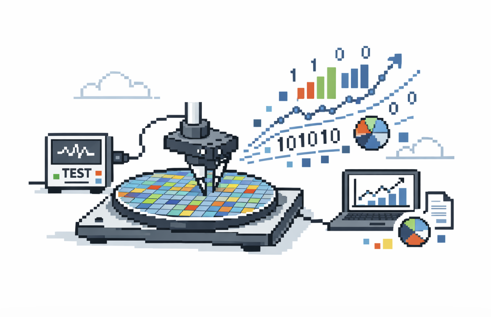

나는 메모리 반도체(특히 Nand Flash)를 평가하고 분석하는 팀에 있다. 정말 말 그대로 반도체를 만들고나면 고객에게 반도체를 팔기위해 여러 Test를 한다. 여기서 많이들 들어봤을 수율이라는 개념이 나온다.
이때, 정말 많은 데이터들이 나오는데 나는 이 평가를 하며 나오는 모든 데이터를 통계적인 시각에서 보는 그룹에 속해있다. EDS 같은 전기적 테스트 데이터, Chip 수준 품질 지표, Nand의 Block 패턴처럼 Wafer와 Chip에서의 벌어지는 일을 드러내는 신호 데이터들이 주요 대상이다. 이 데이터는 물량 선별(Wafer와 Chip의 Tier를 매긴다..!), 물량 공급 판단, 불량 대응 같은 업무에도 쓰이고, 기존 조건의 데이터와 새로운 개발 물량의 새로운 조건에서의 데이터를 비교하는 리뷰 업무도 진행한다.

1. Data Review Board
다른 데이터 조직과 마찬가지로 이곳에서도 AB-Test를 진행한다. 공정이 바뀌었거나 생산 설비라인을 바꾼다거나.. 모든 것은 돈이기에 함부로 진행할 수는 없다. 모두 Risk를 확인해보아야한다. 우리 데이터 그룹은 이 과정에서 Test에서 나오는 모든 데이터를 비교해보는 업무를 통해 Risk를 확인한다. 우리 데이터 그룹에서는 이런 리뷰 업무의 한 축을 Data Review Board(DRB)라고 부른다. 이름은 좀 거창하지만, 실무 질문은 사실 심플하다. 새 조건이 기준 조건에서 의미 있게 벗어났는가?
조금 더 풀어 쓰면 이렇다. reference는 우리가 이미 충분히 성격과 Risk를 파악한 기준 물량이고, target은 새 공정이든 설비이든, 어쨌든 Total 리뷰가 필요한 집단이다. DRB에서 해야 하는 일은 둘의 차이를 숫자로 보고, 그 차이가 실제로 엔지니어가 신경 써야 할 수준인지 판단하여 이슈하는 것이다.
이 지점에서 DRB는 품질 리뷰이면서 동시에 통계 문제이기도 하다. 기준선이 있고, 비교 대상이 있고, 평균이 달라질 수 있고, 산포도 달라질 수 있고, 마지막에는 이걸 받아들일지 말지를 결정해야 한다. 아주 실무적인 일처럼 보이지만, 뼈대를 벗겨 보면 꽤 정통 통계 문제다.
여기서 사실 반도체 공정 데이터만이 가지고있는 특성들도 당연히 있다. 1. Spatial 2. 표본 모으기가 정말 힘들다 / IT 플랫폼처럼 아름답고도 많은 비교군 대조군을 형성하기 힘들다. 돈이 정말 많이 든다. 이러한 특성 하에서도 생각할 거리가 많다.
2. 이거, 어디서 많이 봤다… Two-Sample Test다!
이 구조, 어디서 많이 봤는데? 🤔
Reference와 Target, 두 집단 비교, 평균 차이, 변동성, 판단. 결국 뼈대만 보면 Two-Sample Test, 넓~게 말하면 AB-Test다. 물론 우리가 하는 일은 전형적인 프로덕트 실험과는 다르다. 거기서는 보통 “두 집단이 다른가?”가 중심 질문이지만, 여기서는 “타깃이 기준선에서 얼마나 이탈했는가?”가 더 중요하다. 그래도 통계적 골격 자체는 분명 익숙하다.
이상했다. Textbook에서 보던 도구들이 당연히 중심에 있을 거라고 생각했다. T-Test, P-Value, Pooled Standard Deviation을 이용한 Standardized Difference 같은 것들 말이다. 실제로 Standardized Mean Difference는 원래 두 집단 비교에서 널리 쓰이는 효과크기 지표이고, 정규·등분산 상황에서는 해석도 가장 자연스럽다.
문제는 DRB의 질문이 애초에 그 교과서적 상황과 완전히 같지는 않다는 점이다. 우리에게 Reference는 그냥 “비교군 A”가 아니라 기준선이고, Target은 평균만 바뀌는 집단이 아니라 산포까지 흔들릴 수 있는 리뷰 대상이다.
3. 기존 접근: 이름은 없지만 모두가 쓰던 지표
우리는 Pooled SD를 쓰지 않았다
하루하루 반복적인 업무를 하다보니 어느 순간 이런 생각이들었다. “잠깐, 엥? 우리 왜 이 지표를 이렇게 쓰지?”
데이터 그룹 현업에서 모두가 그냥 쓰던 지표를 다시 봐봤다. 분모가 예상과 달랐다. 두 집단의 변동성을 합쳐 쓴 pooled SD가 아니라, 오직 Reference 집단의 표준편차만 들어가 있었다. 정식 이름을 붙여 설명하는 사람은 거의 없었지만, 다들 그 지표를 그냥 썼다. 이유를 물어보면 돌아오는 답은 통계적인 답이 아니었다. 완전히 현업 언어였다. “Target 조건의 산포가 튀면, 그걸 분모에 섞는 순간 점수가 좀.. 직아집니다. 놓치는 지수들이 생겨요.”
이 말은 그냥 정확하다. Target이 불안정해졌다면, 그 불안정성은 우리가 풀어야 하는 문제의 일부다. 그런데 그 Noisy함을 분모에 함께 넣어버리면, 오히려 변화가 덜 심각해 보일 수 있다. 엔지니어 입장에서는 찝찝하다.
수학과 출신인 나에게 이 지표는 “이름 없는 관습”이 아니라 “뭔가 통계학적으로 정체가 있을 것 같은 지표”처럼 보이기 시작했다.
4. 사내 지표를 역설계해 보니 Glass’s Delta였다
집에 와서 AI들과 함께 살짝 더 파고들어 보니, 이 사내 지표는 사실 이미 통계학에 이름이 붙어 있었다. 바로 Glass’s Delta다.
\[\Delta_{\text{Glass}} = \frac{\mu_{\text{target}}-\mu_{\text{reference}}}{\sigma_{\text{reference}}}\]
Glass’s Delta는 Control 또는 Reference 그룹의 표준편차를 분모로 쓰는 효과크기다. 반면 Cohen류의 익숙한 Standardized Mean Difference는 보통 두 집단의 Pooled Standard Deviation을 쓴다. 즉, 겉보기엔 “분모를 어떻게 둘까”의 문제처럼 보여도, 실제로는 무슨 잣대로 변화를 재고 있느냐의 문제다. Glass가 Control/Reference 쪽 SD를 쓰는 이유도, 여러 Treatment가 Control과 비교될 때 Control Variability를 기준 잣대로 두고 싶다는 데 있었다.
여기서 재미있는 건 우리가 새로운 통계를 현장에 가져온 게 아니라는 점이다. 오히려 반대다. 현업 엔지니어들은 이미 이름 없이 그 논리를 쓰고 있었다. Baseline은 기준선으로 남아야 하고, Target의 불안정성이 다름의 크기를 덜 커 보이게 만들어서는 안 된다는 감각. 통계학은 거기에 뒤늦게 명찰을 달아줬을 뿐이다.
이런 의미에서 진짜 발견은 “Glass’s Delta라는 희귀한 지표를 찾았다”가 아니다. 반도체 데이터 리뷰 Workflow 안에, 이미 Glass’s Delta의 문제의식이 숨어 있었다는 점이 흥미롭다.
5. Small Simulation
여기서 예시 R/python 로 (분명 ref는 안정~ target은 날뛰는데 이러면 알람을 울려야함. 우리는 1sigma 기준을 보통 쓴다. 근데 pooled를 쓰면 안 울리고 glass 쓰면 울리는 상황을 그림으로 잘 보여줘보쟈!!!!!!!!!!) 추가로 1sigma 기준으로 1/0을 나누는건 안 좋다 effect size를 써야함!!
6. 가벼운 수학적 해석
핵심은 간단하다. **분모는 장식이 아니다. 분모가 곧 비교의 의미를 정한다.**
두 집단이 정규분포를 따르고 분산도 같다면, pooled standard deviation으로 표준화한 효과크기는 아주 자연스럽다. standardized mean difference가 분포 겹침이나 비겹침 해석과 잘 연결되는 것도 이 상황에서다. 하지만 분산이 다를 수 있다면 이야기가 달라진다. 그 순간 pooled-SD 계열과 reference-anchored 계열은 더 이상 같은 대상을 재고 있지 않다. 최근 해설은 հենց 이 점을 강조한다. standardized mean difference는 **정규·등분산**일 때 가장 자연스럽고, 이분산 상황에서는 표준화 방식마다 해석이 달라질 수 있다. ([PMC](https://pmc.ncbi.nlm.nih.gov/articles/PMC11562970/?utm_source=chatgpt.com))
이걸 간단한 식으로 보면 더 선명하다. reference와 target의 평균 차이는 고정되어 있다고 하자. 그리고 target의 표준편차가 reference의 (k)배라고 두자. 표본 크기가 비슷하면 pooled SD는 대략
[
s_{\text{pooled}}
\approx
\sigma_{\text{reference}}
\sqrt{\frac{1+k^2}{2}}
]
가 된다. 따라서 pooled effect size는
[d_{\text{pooled}}
\frac{\mu_{\text{target}}-\mu_{\text{reference}}}{s_{\text{pooled}}}
\Delta_{\text{Glass}}
\cdot
\frac{1}{\sqrt{(1+k^2)/2}}
]
로 쓸 수 있다.
이 식이 말하는 바는 아주 직설적이다.
**평균 이동이 그대로여도 target variance만 커지면 pooled effect size는 자동으로 줄어든다.**
한 줄 더 밀어붙이면,
# [\frac{\partial d_{\text{pooled}}}{\partial k}
- \Delta_{\text{Glass}}
\cdot
\frac{\sqrt{2},k}{(1+k^2)^{3/2}}
< 0
\qquad
(k>0,\ \Delta_{\text{Glass}}>0)
]
이므로, (k)가 커질수록 pooled score는 단조감소한다.
즉, target이 더 noisy해지는 순간 pooled score는 평균 이동 자체가 작아진 것처럼 행동한다.
이게 바로 현장에서 말하던 “산포 튄 걸 분모에 섞으면 점수가 이상해진다”의 수학적 번역이다. 이건 취향 문제가 아니라, 분모가 만들어내는 **attenuation mechanism**이다.7. 한계와 다음 질문
위에
Appendix
여기서는 석사 수리통계 경험을 살려 좀 깊게? (이거 나도 공부가 많이 될 듯)